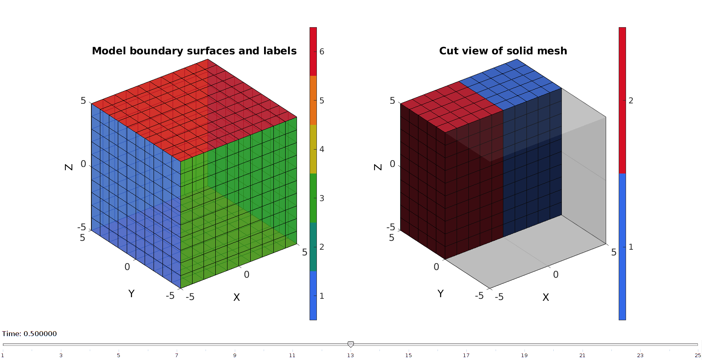

DEMO_febio_0011_cube_multi_generation
Below is a demonstration for:
- Building geometry for a cube with hexahedral elements
- Defining the boundary conditions
- Coding the febio structure
- Running the model
- Importing and visualizing the displacement and stress results
Contents
Keywords
- febio_spec version 2.5
- febio, FEBio% *
- compression, tension, compressive, tensile
- displacement control, displacement boundary condition
- hexahedral elements, hex8
- cube, box, rectangular
- static, solid
- multigeneration, multi-generation
- multi-step analysis
- hyperelastic, Ogden
- displacement logfile
- stress logfile
clear; close all; clc;
Plot settings
fontSize=20; faceAlpha1=0.8; markerSize=40; lineWidth=3;
Control parameters
% Path names defaultFolder = fileparts(fileparts(mfilename('fullpath'))); savePath=fullfile(defaultFolder,'data','temp'); % Defining file names febioFebFileNamePart='tempModel'; febioFebFileName=fullfile(savePath,[febioFebFileNamePart,'.feb']); %FEB file name febioLogFileName=fullfile(savePath,[febioFebFileNamePart,'.txt']); %FEBio log file name febioLogFileName_disp=[febioFebFileNamePart,'_disp_out.txt']; %Log file name for exporting force febioLogFileName_strainEnergy=[febioFebFileNamePart,'_energy_out.txt']; %Log file name for exporting force %Specifying dimensions and number of elements cubeSize=10; sampleWidth=cubeSize; %Width sampleThickness=cubeSize; %Thickness sampleHeight=cubeSize; %Height pointSpacings=1*ones(1,3); %Desired point spacing between nodes numElementsWidth=round(sampleWidth/pointSpacings(1)); %Number of elemens in dir 1 numElementsThickness=round(sampleThickness/pointSpacings(2)); %Number of elemens in dir 2 numElementsHeight=round(sampleHeight/pointSpacings(3)); %Number of elemens in dir 3 %Define applied displacement appliedStrain=0.3; %Linear strain (Only used to compute applied stretch) loadingOption='tension'; % or 'tension' switch loadingOption case 'compression' stretchLoad=1-appliedStrain; %The applied stretch for uniaxial loading case 'tension' stretchLoad=1+appliedStrain; %The applied stretch for uniaxial loading end displacementMagnitude=(stretchLoad*sampleHeight)-sampleHeight; %The displacement magnitude %Material parameters k_factor=50; c1=2; m1=2; k=c1*k_factor; c1_g=[c1/1000 c1*2]; k_g=c1_g*k_factor; % FEA control settings numTimeSteps=10; %Number of time steps desired max_refs=25; %Max reforms max_ups=0; %Set to zero to use full-Newton iterations opt_iter=6; %Optimum number of iterations max_retries=5; %Maximum number of retires dtmin=(1/numTimeSteps)/100; %Minimum time step size dtmax=1/numTimeSteps; %Maximum time step size
Creating model geometry and mesh
A box is created with tri-linear hexahedral (hex8) elements using the hexMeshBox function. The function offers the boundary faces with seperate labels for the top, bottom, left, right, front, and back sides. As such these can be used to define boundary conditions on the exterior.
% Create a box with hexahedral elements cubeDimensions=[sampleWidth sampleThickness sampleHeight]; %Dimensions cubeElementNumbers=[numElementsWidth numElementsThickness numElementsHeight]; %Number of elements outputStructType=2; %A structure compatible with mesh view [meshStruct]=hexMeshBox(cubeDimensions,cubeElementNumbers,outputStructType); %Access elements, nodes, and faces from the structure E=meshStruct.elements; %The elements V=meshStruct.nodes; %The nodes (vertices) Fb=meshStruct.facesBoundary; %The boundary faces Cb=meshStruct.boundaryMarker; %The "colors" or labels for the boundary faces
Splitting mesh into 2 material groups
X=V(:,1); Y=V(:,2); Z=V(:,3); VE=[mean(X(E),2) mean(Y(E),2) mean(Z(E),2)]; logicMaterial_1=VE(:,1)<0; elementMaterialID=logicMaterial_1+1; %Reoder E to cope with FEBio bug in relation to element ordering and %multiple material sets E=[E(elementMaterialID==1,:); E(elementMaterialID==2,:);]; elementMaterialID=[elementMaterialID(elementMaterialID==1,:); elementMaterialID(elementMaterialID==2,:);]; %Fix meshStruct to allow for meshView based visualization meshStruct.elementMaterialID=elementMaterialID; meshStruct.elements=E;
Plotting model boundary surfaces and a cut view
hFig=cFigure; hs=subplot(1,2,1); hold on; title('Model boundary surfaces and labels','FontSize',fontSize); gpatch(Fb,V,Cb,'k',faceAlpha1); view(3) colormap(gjet(12)); icolorbar; axisGeom(gca,fontSize); hs=subplot(1,2,2); hold on; title('Cut view of solid mesh','FontSize',fontSize); optionStruct.hFig=[hFig hs]; meshView(meshStruct,optionStruct); axisGeom(gca,fontSize); colormap(gca,gjet(2)); icolorbar; drawnow;
Defining the boundary conditions
The visualization of the model boundary shows colors for each side of the cube. These labels can be used to define boundary conditions.
%Define supported node sets logicFace=Cb==5; %Logic for current face set Fr=Fb(logicFace,:); %The current face set bcSupportList=unique(Fr(:)); %Node set part of selected face %Prescribed displacement nodes logicPrescribe=Cb==6; %Logic for current face set Fr=Fb(logicPrescribe,:); %The current face set bcPrescribeList=unique(Fr(:)); %Node set part of selected face
Visualizing boundary conditions. Markers plotted on the semi-transparent model denote the nodes in the various boundary condition lists.
hf=cFigure; title('Boundary conditions','FontSize',fontSize); xlabel('X','FontSize',fontSize); ylabel('Y','FontSize',fontSize); zlabel('Z','FontSize',fontSize); hold on; gpatch(Fb,V,'kw','k',0.5); hl(1)=plotV(V(bcSupportList,:),'k.','MarkerSize',markerSize); hl(2)=plotV(V(bcPrescribeList,:),'r.','MarkerSize',markerSize); legend(hl,{'BC support','BC prescribe'}); axisGeom(gca,fontSize); camlight headlight; drawnow;

Defining the FEBio input structure
See also febioStructTemplate and febioStruct2xml and the FEBio user manual.
%Get a template with default settings [febio_spec]=febioStructTemplate; %febio_spec version febio_spec.ATTR.version='2.5'; %Module section febio_spec.Module.ATTR.type='solid'; %Create control structure for use by all steps stepStruct.Control.analysis.ATTR.type='static'; stepStruct.Control.title='Cube analysis'; stepStruct.Control.time_steps=numTimeSteps; stepStruct.Control.step_size=1/numTimeSteps; stepStruct.Control.time_stepper.dtmin=dtmin; stepStruct.Control.time_stepper.dtmax=dtmax; stepStruct.Control.time_stepper.max_retries=max_retries; stepStruct.Control.time_stepper.opt_iter=opt_iter; stepStruct.Control.max_refs=max_refs; stepStruct.Control.max_ups=max_ups; %Add template based default settings to proposed control section [stepStruct.Control]=structComplete(stepStruct.Control,febio_spec.Control,1); %Complement provided with default if missing %Remove control field (part of template) since step specific control sections are used febio_spec=rmfield(febio_spec,'Control'); febio_spec.Step{1}.ATTR.id=1; febio_spec.Step{1}.Control=stepStruct.Control; febio_spec.Step{2}.ATTR.id=2; febio_spec.Step{2}.Control=stepStruct.Control; %Material section febio_spec.Material.material{1}.ATTR.id=1; febio_spec.Material.material{1}.ATTR.name='Normal material'; febio_spec.Material.material{1}.ATTR.type='Ogden unconstrained'; febio_spec.Material.material{1}.c1=c1; febio_spec.Material.material{1}.m1=m1; febio_spec.Material.material{1}.c2=c1; febio_spec.Material.material{1}.m2=-m1; febio_spec.Material.material{1}.cp=k; febio_spec.Material.material{2}.ATTR.id=2; febio_spec.Material.material{2}.ATTR.name='Multigeneration material'; febio_spec.Material.material{2}.ATTR.type='multigeneration'; febio_spec.Material.material{2}.generation{1}.ATTR.id=1; febio_spec.Material.material{2}.generation{1}.start_time=0; febio_spec.Material.material{2}.generation{1}.solid{1}.ATTR.type='Ogden unconstrained'; febio_spec.Material.material{2}.generation{1}.solid{1}.c1=c1_g(1); febio_spec.Material.material{2}.generation{1}.solid{1}.m1=m1; febio_spec.Material.material{2}.generation{1}.solid{1}.c2=c1_g(1); febio_spec.Material.material{2}.generation{1}.solid{1}.m2=-m1; febio_spec.Material.material{2}.generation{1}.solid{1}.cp=k_g(1); febio_spec.Material.material{2}.generation{2}.ATTR.id=2; febio_spec.Material.material{2}.generation{2}.start_time=1; febio_spec.Material.material{2}.generation{2}.solid{1}.ATTR.type='Ogden unconstrained'; febio_spec.Material.material{2}.generation{2}.solid{1}.c1=c1_g(2); febio_spec.Material.material{2}.generation{2}.solid{1}.m1=m1; febio_spec.Material.material{2}.generation{2}.solid{1}.c2=c1_g(2); febio_spec.Material.material{2}.generation{2}.solid{1}.m2=-m1; febio_spec.Material.material{2}.generation{2}.solid{1}.cp=k_g(2); %Geometry section % -> Nodes febio_spec.Geometry.Nodes{1}.ATTR.name='nodeSet_all'; %The node set name febio_spec.Geometry.Nodes{1}.node.ATTR.id=(1:size(V,1))'; %The node id's febio_spec.Geometry.Nodes{1}.node.VAL=V; %The nodel coordinates % -> Elements febio_spec.Geometry.Elements{1}.ATTR.type='hex8'; %Element type of this set febio_spec.Geometry.Elements{1}.ATTR.mat=1; %material index for this set febio_spec.Geometry.Elements{1}.ATTR.name='Cube_mat1'; %Name of the element set febio_spec.Geometry.Elements{1}.elem.VAL=E(elementMaterialID==1,:); febio_spec.Geometry.Elements{1}.elem.ATTR.id=(1:1:nnz(elementMaterialID==1))'; %Element id's febio_spec.Geometry.Elements{2}.ATTR.type='hex8'; %Element type of this set febio_spec.Geometry.Elements{2}.ATTR.mat=2; %material index for this set febio_spec.Geometry.Elements{2}.ATTR.name='Cube_mat2'; %Name of the element set febio_spec.Geometry.Elements{2}.elem.VAL=E(elementMaterialID==2,:); febio_spec.Geometry.Elements{2}.elem.ATTR.id=(1+nnz(elementMaterialID==1):1:nnz(elementMaterialID==1)+nnz(elementMaterialID==2))'; %Element id's % -> NodeSets febio_spec.Geometry.NodeSet{1}.ATTR.name='bcSupportList'; febio_spec.Geometry.NodeSet{1}.VAL=bcSupportList(:); febio_spec.Geometry.NodeSet{2}.ATTR.name='bcPrescribeList'; febio_spec.Geometry.NodeSet{2}.VAL=bcPrescribeList(:); %Boundary condition section % -> Fix boundary conditions febio_spec.Boundary.fix{1}.ATTR.bc='x'; febio_spec.Boundary.fix{1}.ATTR.node_set=febio_spec.Geometry.NodeSet{1}.ATTR.name; febio_spec.Boundary.fix{2}.ATTR.bc='y'; febio_spec.Boundary.fix{2}.ATTR.node_set=febio_spec.Geometry.NodeSet{1}.ATTR.name; febio_spec.Boundary.fix{3}.ATTR.bc='z'; febio_spec.Boundary.fix{3}.ATTR.node_set=febio_spec.Geometry.NodeSet{1}.ATTR.name; % -> Prescribe boundary conditions %STEP 1 Tension febio_spec.Step{1}.Boundary.prescribe{1}.ATTR.bc='z'; febio_spec.Step{1}.Boundary.prescribe{1}.ATTR.node_set=febio_spec.Geometry.NodeSet{2}.ATTR.name; febio_spec.Step{1}.Boundary.prescribe{1}.scale.ATTR.lc=1; febio_spec.Step{1}.Boundary.prescribe{1}.scale.VAL=1; febio_spec.Step{1}.Boundary.prescribe{1}.relative=1; febio_spec.Step{1}.Boundary.prescribe{1}.value=displacementMagnitude; febio_spec.Step{1}.Boundary.prescribe{2}.ATTR.bc='x'; febio_spec.Step{1}.Boundary.prescribe{2}.ATTR.node_set=febio_spec.Geometry.NodeSet{2}.ATTR.name; febio_spec.Step{1}.Boundary.prescribe{2}.scale.ATTR.lc=1; febio_spec.Step{1}.Boundary.prescribe{2}.scale.VAL=1; febio_spec.Step{1}.Boundary.prescribe{2}.relative=1; febio_spec.Step{1}.Boundary.prescribe{2}.value=0; febio_spec.Step{1}.Boundary.prescribe{3}.ATTR.bc='y'; febio_spec.Step{1}.Boundary.prescribe{3}.ATTR.node_set=febio_spec.Geometry.NodeSet{2}.ATTR.name; febio_spec.Step{1}.Boundary.prescribe{3}.scale.ATTR.lc=1; febio_spec.Step{1}.Boundary.prescribe{3}.scale.VAL=1; febio_spec.Step{1}.Boundary.prescribe{3}.relative=1; febio_spec.Step{1}.Boundary.prescribe{3}.value=0; %STEP 2 Return form tension febio_spec.Step{2}.Boundary.prescribe{1}.ATTR.bc='z'; febio_spec.Step{2}.Boundary.prescribe{1}.ATTR.node_set=febio_spec.Geometry.NodeSet{2}.ATTR.name; febio_spec.Step{2}.Boundary.prescribe{1}.scale.ATTR.lc=2; febio_spec.Step{2}.Boundary.prescribe{1}.scale.VAL=1; febio_spec.Step{2}.Boundary.prescribe{1}.relative=1; febio_spec.Step{2}.Boundary.prescribe{1}.value=-displacementMagnitude; febio_spec.Step{2}.Boundary.prescribe{2}.ATTR.bc='x'; febio_spec.Step{2}.Boundary.prescribe{2}.ATTR.node_set=febio_spec.Geometry.NodeSet{2}.ATTR.name; febio_spec.Step{2}.Boundary.prescribe{2}.scale.ATTR.lc=2; febio_spec.Step{2}.Boundary.prescribe{2}.scale.VAL=1; febio_spec.Step{2}.Boundary.prescribe{2}.relative=1; febio_spec.Step{2}.Boundary.prescribe{2}.value=0; febio_spec.Step{2}.Boundary.prescribe{3}.ATTR.bc='y'; febio_spec.Step{2}.Boundary.prescribe{3}.ATTR.node_set=febio_spec.Geometry.NodeSet{2}.ATTR.name; febio_spec.Step{2}.Boundary.prescribe{3}.scale.ATTR.lc=2; febio_spec.Step{2}.Boundary.prescribe{3}.scale.VAL=1; febio_spec.Step{2}.Boundary.prescribe{3}.relative=1; febio_spec.Step{2}.Boundary.prescribe{3}.value=0; %LoadData section febio_spec.LoadData.loadcurve{1}.ATTR.id=1; febio_spec.LoadData.loadcurve{1}.ATTR.type='linear'; febio_spec.LoadData.loadcurve{1}.point.VAL=[0 0; 1 1]; febio_spec.LoadData.loadcurve{2}.ATTR.id=2; febio_spec.LoadData.loadcurve{2}.ATTR.type='linear'; febio_spec.LoadData.loadcurve{2}.point.VAL=[1 0; 2 1]; %Output section % -> log file febio_spec.Output.logfile.ATTR.file=febioLogFileName; febio_spec.Output.logfile.node_data{1}.ATTR.file=febioLogFileName_disp; febio_spec.Output.logfile.node_data{1}.ATTR.data='ux;uy;uz'; febio_spec.Output.logfile.node_data{1}.ATTR.delim=','; febio_spec.Output.logfile.node_data{1}.VAL=1:size(V,1); febio_spec.Output.logfile.element_data{1}.ATTR.file=febioLogFileName_strainEnergy; febio_spec.Output.logfile.element_data{1}.ATTR.data='sed'; febio_spec.Output.logfile.element_data{1}.ATTR.delim=','; febio_spec.Output.logfile.element_data{1}.VAL=1:size(E,1);
Quick viewing of the FEBio input file structure
The febView function can be used to view the xml structure in a MATLAB figure window.
febView(febio_spec); %Viewing the febio file
Exporting the FEBio input file
Exporting the febio_spec structure to an FEBio input file is done using the febioStruct2xml function.
febioStruct2xml(febio_spec,febioFebFileName); %Exporting to file and domNode
Running the FEBio analysis
To run the analysis defined by the created FEBio input file the runMonitorFEBio function is used. The input for this function is a structure defining job settings e.g. the FEBio input file name. The optional output runFlag informs the user if the analysis was run succesfully.
febioAnalysis.run_filename=febioFebFileName; %The input file name febioAnalysis.run_logname=febioLogFileName; %The name for the log file febioAnalysis.disp_on=1; %Display information on the command window febioAnalysis.disp_log_on=1; %Display convergence information in the command window febioAnalysis.runMode='external';%'internal'; febioAnalysis.t_check=0.25; %Time for checking log file (dont set too small) febioAnalysis.maxtpi=1e99; %Max analysis time febioAnalysis.maxLogCheckTime=3; %Max log file checking time [runFlag]=runMonitorFEBio(febioAnalysis);%START FEBio NOW!!!!!!!!
%%%%%%%%%%%%%%%%%%%%%%%%%%%%%%%%%%%%%%%%%%%%% --- STARTING FEBIO JOB --- 14-Feb-2018 14:58:01 Waiting for log file... Proceeding to check log file...14-Feb-2018 14:58:01 ------- converged at time : 0.1 ------- converged at time : 0.2 ------- converged at time : 0.3 ------- converged at time : 0.4 ------- converged at time : 0.5 ------- converged at time : 0.6 ------- converged at time : 0.7 ------- converged at time : 0.8 ------- converged at time : 0.9 ------- converged at time : 1 ------- converged at time : 1.1 ------- converged at time : 1.2 ------- converged at time : 1.3 ------- converged at time : 1.4 ------- converged at time : 1.5 ------- converged at time : 1.6 ------- converged at time : 1.7 ------- converged at time : 1.8 ------- converged at time : 1.9 ------- converged at time : 2 --- Done --- 14-Feb-2018 14:58:04
Import FEBio results
if runFlag==1 %i.e. a succesful run
Importing nodal displacements from a log file
[time_mat, N_disp_mat,~]=importFEBio_logfile(fullfile(savePath,febioLogFileName_disp)); %Nodal displacements time_mat=[0; time_mat(:)]; %Time N_disp_mat=N_disp_mat(:,2:end,:); sizImport=size(N_disp_mat); sizImport(3)=sizImport(3)+1; N_disp_mat_n=zeros(sizImport); N_disp_mat_n(:,:,2:end)=N_disp_mat; N_disp_mat=N_disp_mat_n; DN_MAG=sqrt(sum(N_disp_mat.^2,2)); DN=N_disp_mat(:,:,end); DN_magnitude=sqrt(sum(DN(:,3).^2,2)); V_def=V+DN; V_DEF=N_disp_mat+repmat(V,[1 1 size(N_disp_mat,3)]); X_DEF=V_DEF(:,1,:); Y_DEF=V_DEF(:,2,:); Z_DEF=V_DEF(:,3,:); % [CF]=vertexToFaceMeasure(Fb,DN_magnitude);
Importing element strain energies from a log file
[~,E_energy,~]=importFEBio_logfile(fullfile(savePath,febioLogFileName_strainEnergy)); %Element stresses %Remove nodal index column E_energy=E_energy(:,2:end,:); %Add initial state i.e. zero displacement sizImport=size(E_energy); sizImport(3)=sizImport(3)+1; E_energy_mat_n=zeros(sizImport); E_energy_mat_n(:,:,2:end)=E_energy; E_energy=E_energy_mat_n; [F,CF]=element2patch(E,E_energy(:,:,1));
Plotting the simulated results using anim8 to visualize and animate deformations
c1_plot=c1*ones(size(time_mat));
cg_plot=c1_g(1)*ones(size(time_mat));
cg_plot(time_mat>=1)=c1_g(2);
% Create basic view and store graphics handle to initiate animation
hf=cFigure; %Open figure
suptitle([febioFebFileNamePart,': Press play to animate']);
subplot(1,2,1); hold on;
title('Ogden parameter c_1');
xlabel('Time'); ylabel('c_1');
plot(time_mat,c1_plot,'b-','lineWidth',2);
plot(time_mat,cg_plot,'r-','lineWidth',2);
hp1=plot(time_mat(1),c1_plot(1),'b.','MarkerSize',50);
hp2=plot(time_mat(1),cg_plot(1),'r.','MarkerSize',50);
legend([hp1 hp2],'Material 1','Material 2');
axis tight; axis square; set(gca,'fontsize',fontSize);
grid on;
subplot(1,2,2); hold on;
hp3=gpatch(F,V_def,CF,'k',1); %Add graphics object to animate
gpatch(Fb,V,0.5*ones(1,3),'k',0.25); %A static graphics object
colormap(gjet(250)); hc=colorbar;
caxis([0 max(E_energy(:))]);
axisGeom(gca,fontSize);
axis([min(X_DEF(:)) max(X_DEF(:)) min(Y_DEF(:)) max(Y_DEF(:)) min(Z_DEF(:)) max(Z_DEF(:))]);
axis manual;
camlight headlight;
drawnow;
% Set up animation features
animStruct.Time=time_mat; %The time vector
for qt=1:1:size(N_disp_mat,3) %Loop over time increments
DN=N_disp_mat(:,:,qt); %Current displacement
DN_magnitude=sqrt(sum(DN.^2,2)); %Current displacement magnitude
V_def=V+DN; %Current nodal coordinates
[~,CF]=element2patch(E,E_energy(:,:,qt));
%Set entries in animation structure
animStruct.Handles{qt}=[hp3 hp3 hp1 hp1 hp2 hp2]; %Handles of objects to animate
animStruct.Props{qt}={'Vertices','CData','XData','YData','XData','YData'}; %Properties of objects to animate
animStruct.Set{qt}={V_def,CF,time_mat(qt),c1_plot(qt),time_mat(qt),cg_plot(qt)}; %Property values for to set in order to animate
end
anim8(hf,animStruct); %Initiate animation feature
drawnow;

end

GIBBON www.gibboncode.org
Kevin Mattheus Moerman, gibbon.toolbox@gmail.com
GIBBON footer text
License: https://github.com/gibbonCode/GIBBON/blob/master/LICENSE
GIBBON: The Geometry and Image-based Bioengineering add-On. A toolbox for image segmentation, image-based modeling, meshing, and finite element analysis.
Copyright (C) 2018 Kevin Mattheus Moerman
This program is free software: you can redistribute it and/or modify it under the terms of the GNU General Public License as published by the Free Software Foundation, either version 3 of the License, or (at your option) any later version.
This program is distributed in the hope that it will be useful, but WITHOUT ANY WARRANTY; without even the implied warranty of MERCHANTABILITY or FITNESS FOR A PARTICULAR PURPOSE. See the GNU General Public License for more details.
You should have received a copy of the GNU General Public License along with this program. If not, see http://www.gnu.org/licenses/.